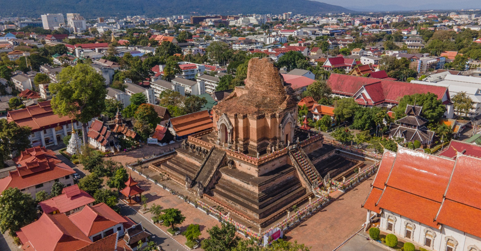
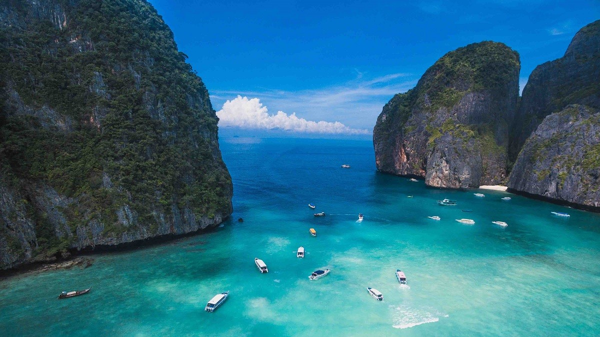
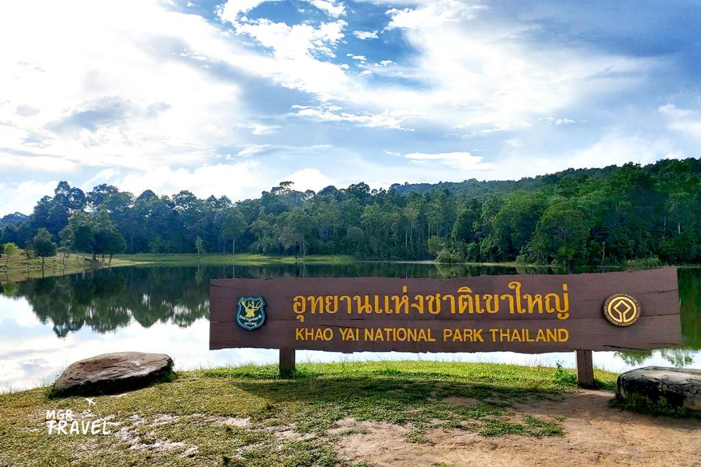

10 ที่เที่ยวเชียงใหม่ ต้องไปสักครั้งในชีวิต
รวมจุดหมายยอดฮิตของเชียงใหม่ ตั้งแต่วัดเก่าแก่ไปจนถึงคาเฟ่วิวภูเขา เหมาะกับทริปสั้นๆ ช่วงวันหยุด
เคล็ดลับ รีวิว และไอเดียการเดินทางจากทีมเที่ยวมะ

รวมจุดหมายยอดฮิตของเชียงใหม่ ตั้งแต่วัดเก่าแก่ไปจนถึงคาเฟ่วิวภูเขา เหมาะกับทริปสั้นๆ ช่วงวันหยุด

เทคนิควางแผนทริปทะเลภาคใต้ ทั้งเรื่องที่พัก การเดินทาง และช่วงเวลาที่ราคาตั๋วเครื่องบินถูกที่สุด

เส้นทางเดินป่าที่เหมาะกับผู้เริ่มต้น พร้อมของที่ควรเตรียมและข้อควรระวังก่อนออกเดินทาง
จัดตารางเที่ยวอยุธยาแบบวันเดียวจบ พร้อมร้านอาหารเด็ดใกล้แหล่งท่องเที่ยว